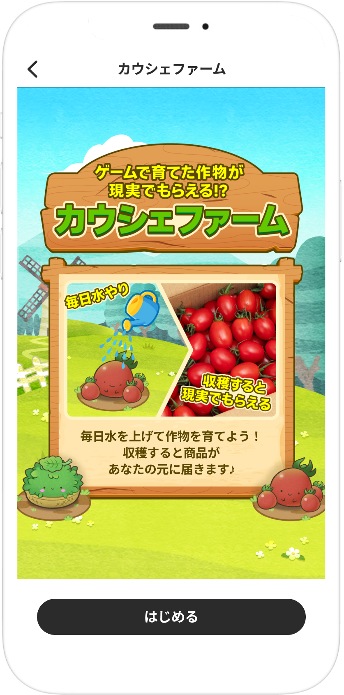
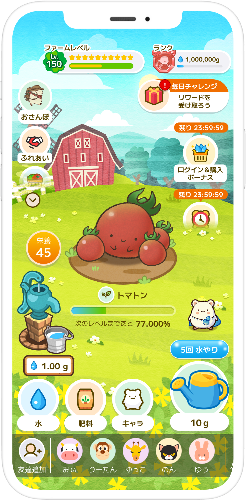
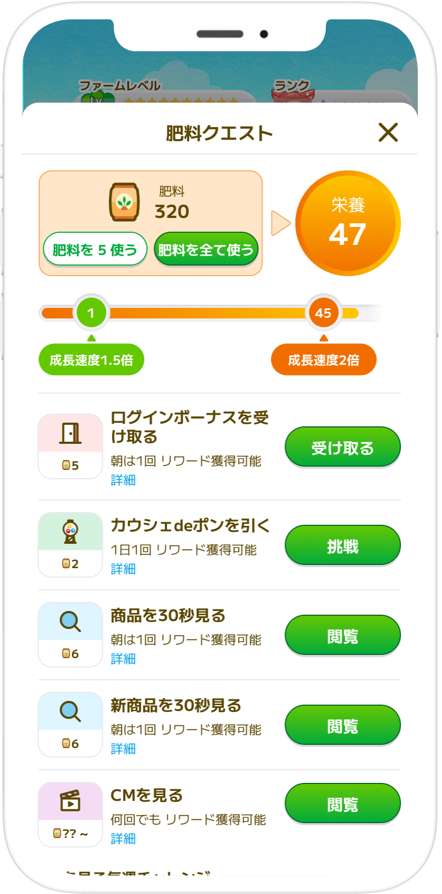
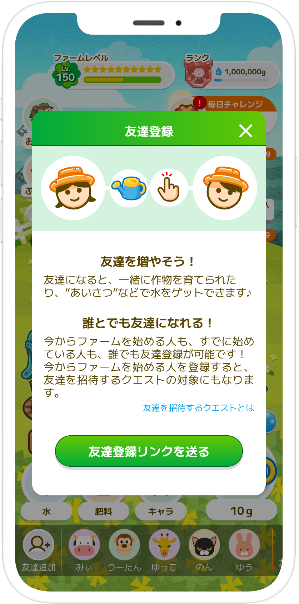
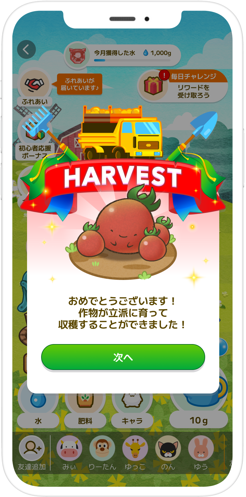
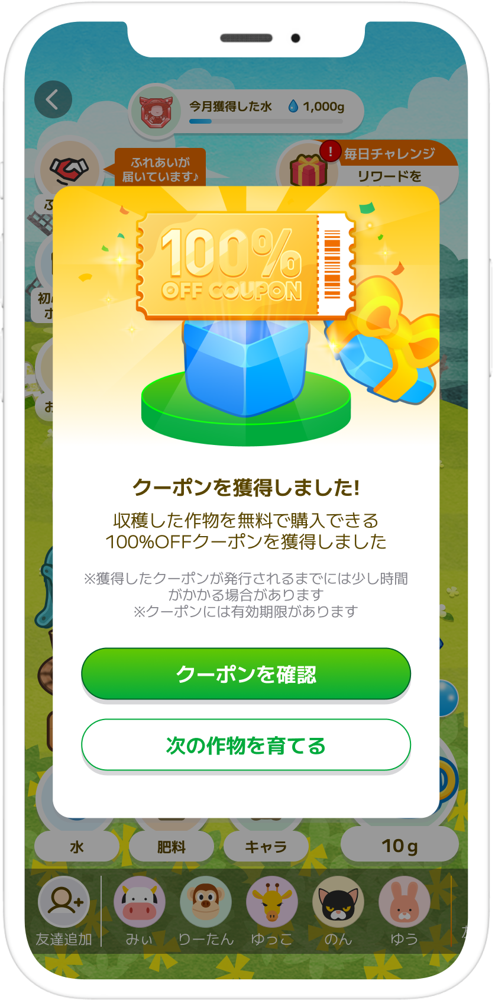

水やりや毎日の小さなアクションで作物を育て、収穫するとクーポンが届きます。まずは、カウシェファームの流れを見てみましょう。
01
はじめにファームへ
スマホで水や肥料をあげて、作物を育てます。収穫の先には、お買い物に使えるクーポンが待っています。

02
水をあげて作物を育てる
毎日開くのは、この農園の画面。水をあげながら、少しずつ作物を育てていきます。

03
水だけでなく肥料も使える
肥料を使うと、作物の成長を後押しできます。毎日のクエストなどで、肥料を受け取る機会があります。

04
友達と育てる楽しみも
友達になると、あいさつなどを通じて水や肥料を受け取れます。ひとりで始めても、少しずつ農園のつながりを増やしていけます。

05
育ったらいよいよ収穫
毎日の積み重ねで作物が立派に育つと、収穫のタイミングです。

06
収穫後はクーポンを受け取る
収穫した作物に応じて、商品に使えるクーポンが届きます。クーポンの内容や利用条件、有効期限はアプリ内で確認してください。

今日からひとつ育ててみる
水やりから始めて、カウシェファームの楽しさを体験してみてください。
カウシェをはじめるこのボタンは個人紹介リンクです。リンク経由で登録・利用された場合、当サイト運営者が紹介特典を受け取ることがあります。